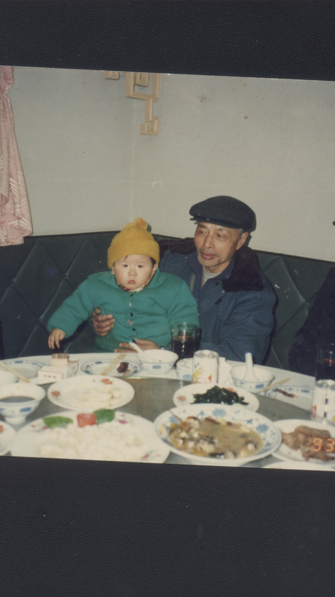
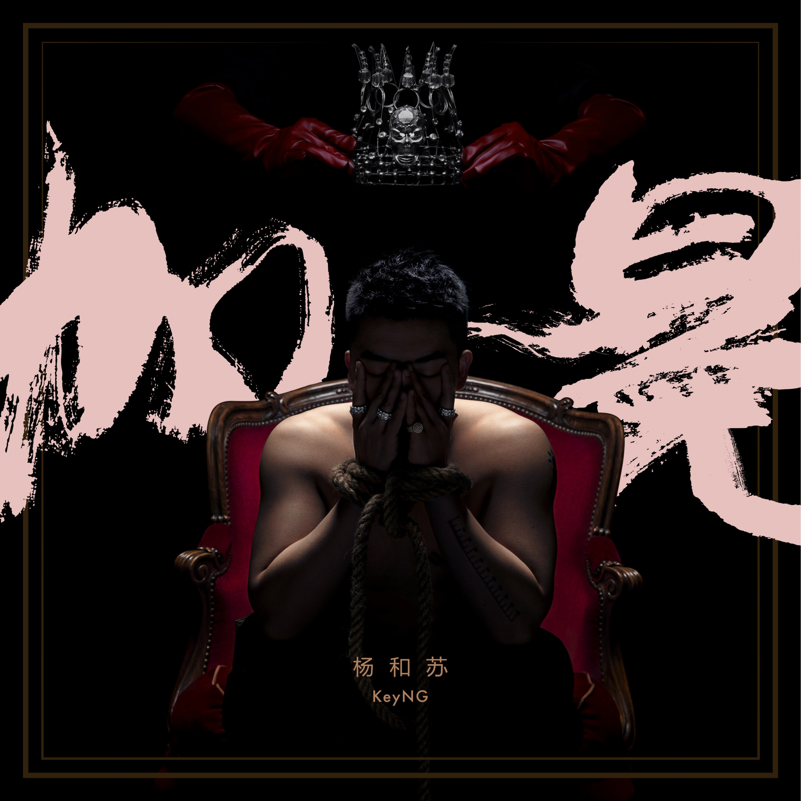
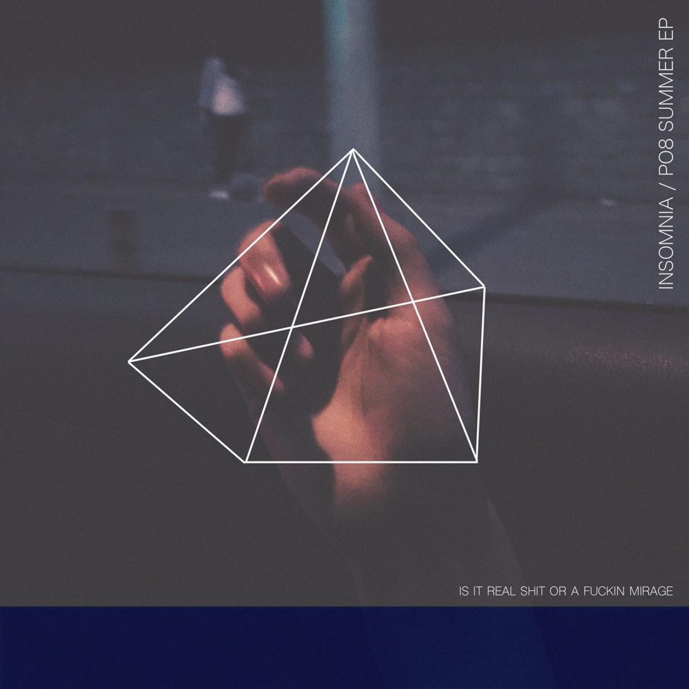

|  |
这首歌以书信的形式描述了一段被战乱、政治、家庭和时光重重阻力所阻隔的爱情，竟是比现在的提多都来得诚挚和坚定。 岁月夺走了我们太多东西，但那无论如何也不想让时间夺去的， 甚至当即即将离开之时还想要紧紧抓在手里的，便是这一生的挚爱和信仰了吧。 作者法老自己也说：“年轻见不到，年老怕打扰，生命抵达终点之后会再次重逢。” |
|
这首歌无疑时一首高级的作品，时间维度设定为2017-2072，主观设想了中文hiphop的消亡史。 作者法老作为采访者采访了3个采访对象，这三个采访对象代表了三类人群， 通过网络综艺接触说唱，带着饭圈思想的新听众； 深受oldschool影响，尊敬国内地下老前辈的老牌听众； 以及川渝陷阱，推崇海尔兄弟致富路径的Trap玩家。 如今中文说唱因为曝光度增加，正在这三类人群的纷争和包容之间发展， 歌曲也带领我们去思考这个文化最后是会走向繁荣还是灭亡。 |
|
我想呼风唤雨 用奇妙旋律 第一次听完这首歌，这段hook就已经抓住了我的耳朵，让人憧憬的同时带着一丝心酸无奈， 也能感受到作者随着人气的增长而产生的一些心态变化， |
|
这首歌讲述的是战争废墟下一个幸存小男孩和一个被大部队抛下的的敌方士兵的故事， 在歌曲中由辛巴和泥鳅分别扮演士兵和小男孩。 而歌曲最后枪里的最后那一颗子弹到底对准了谁也给听众留下了想象的空间。 开放式的结尾和反战的立意，更凸显了战争的残酷，也表明了hiphop的peace&love。 |
|  |
这首歌分为三段verse，从女朋友、父母和自己的角度和自己对话，走心之作，写出了追逐嘻哈梦想路上的艰辛。 从技术上来说，反拍的运用也是炉火纯青，一开始听可能会感觉不舒服，可听多了会发现每个吐字都稳稳的压在了拍子上。 |
|
软软的Flow虽然无法虎虎生风，但是轻飘飘的Flow却可以让你升空。这是我对安全着陆Flow的评价。 这首歌描写了一个少年青春期的迷茫，被懵懂的感情所困扰，也想过要离家出走，在迷茫中时间已经偷偷溜走， 用时间杀人来做比喻，其实时间带走了他的青春年华，而当少年不再年少，坐在钢琴旁想起了逝去的青春， 他仿佛看见少年的自己就站在的自己面前，而现在的自己又能否给少年回答。 |
|  |
PO8写词的功力在这首歌里很好的体现出来了，韵脚和flow的编排都恰到好处，歌词犀利又透露着文采。 PO8正如他名字的谐音poet一样，诗句般的歌词给人以强烈的画面感。 |